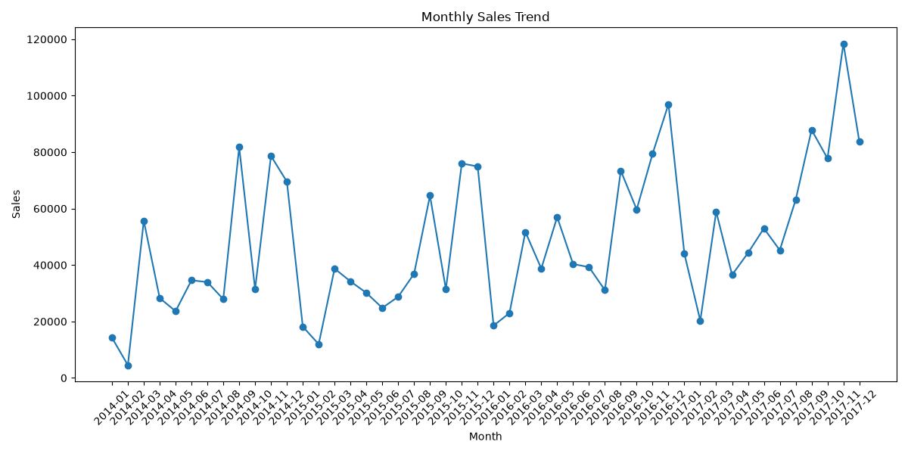
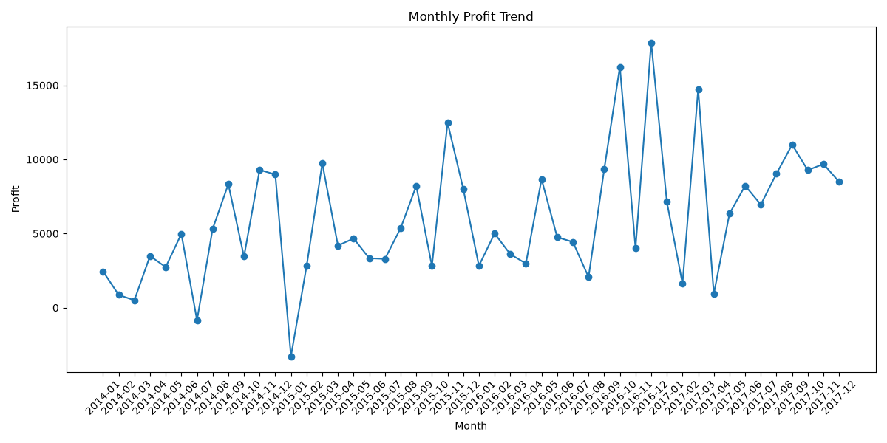
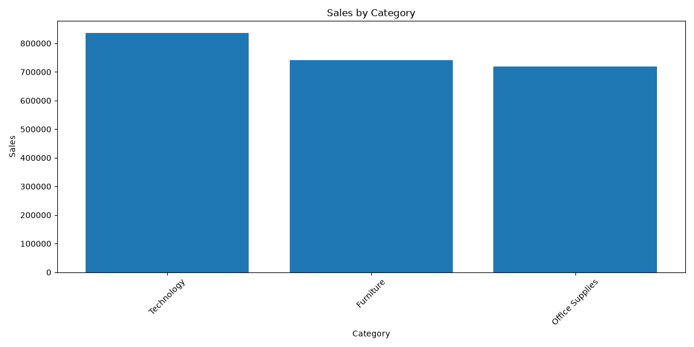
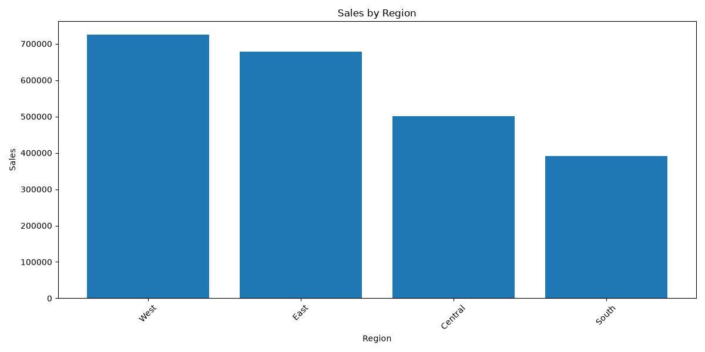
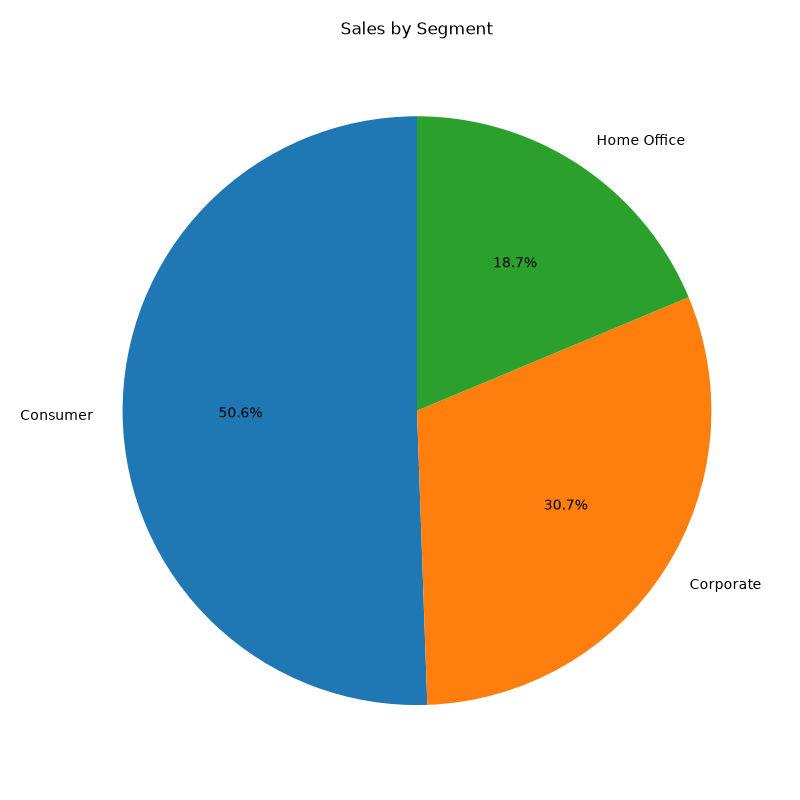
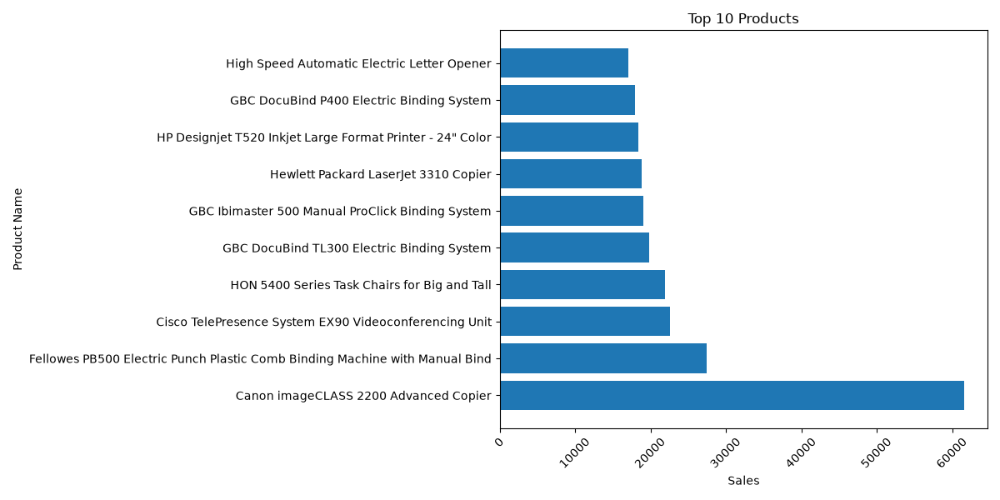

Strategic overview of operational metrics, financial health, and AI insights
Your business is generating solid overall sales with strong customer demand, particularly in the Technology category and the West region. However, a company-wide profit margin of about 12.5 percent reveals that high revenue is not translating into equally high returns. Seasonal spikes at the end of each year drive a large portion of your success, while certain regions and individual months face profitability dips or losses that need immediate attention.





